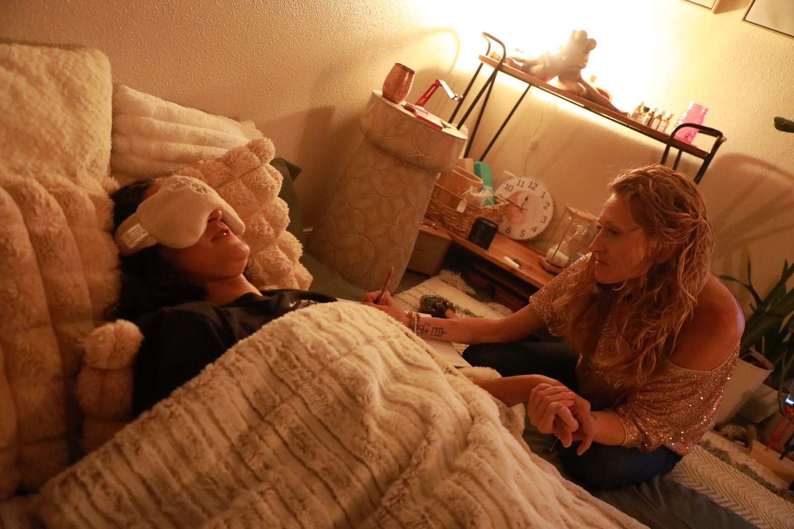

Individual Therapy · Mesa, AZ
Therapy that meets you where you are.
Holistic, trauma-informed therapy for pre-teens, teens, and adults. The slow, sacred work of coming home to yourself.
Reaching out takes courage. I know that, because I've been on your side of this page too — the one scrolling at midnight, half-hoping the right person exists and half-afraid of what'll happen if she does.
If you're here, you're probably carrying something. Maybe it's anxiety that won't quiet down. Maybe it's a sadness you can't name out loud. Maybe you're going through the motions of a life that looks fine on paper but feels like a stranger's. Maybe you've been doing the strong-and-capable thing for so long that you've forgotten what soft feels like.
Whatever it is — you don't have to keep doing it alone.
Coming back home to Self
Individual therapy is about coming back home to Self — the authentic Self we lose along the way. It's about getting to know ourselves deeper and expressing and living authentically, wholly.
Trauma, or the wounding we experience in life, is the root of our struggles — anxiety, depression, anger, unhealthy relationships, insecurity, shame, addiction. We explore the past in order to heal it. We learn how to show up for the present moment in healthier ways to create a different future.
Is this you?
You can't sleep, or you sleep too much. Either way you wake up tired.
Your relationships feel strained, distant, or slowly going sideways.
You've been telling yourself "I'll deal with it later" for years.
You've tried to push through on your own and you're tired.
Something happened — recently or a long time ago — and it's still in your body.
You want a different relationship with yourself, your past, your future.
Most therapy is built around symptoms. This isn't that.

"I'm in tank tops and boots, not a starched coat."
I bring all of myself into the room because you bring all of yourself into the room — your nervous system, your history, your body, your spirit, your story. We might talk for half a session and do a somatic exercise for the other half. We might use EMDR to process something old. We might sit in silence. We might laugh.
My office isn't sterile — it's a place to land. I won't pretend I have a fix for you, because you don't need fixing. You need a witness, a guide, and a steady hand while you figure out what's underneath all of it.
EMDR
Trauma processing without reliving it
Somatic Work
Your body holds the story too
Parts & Inner Child
Meeting the parts you've been avoiding
CBT / ACT
Practical tools that actually work
What we work on.
None of it is too much. None of it is too small to bring in.
Anxiety
The kind that lives in your chest, your jaw, your sleep. Practical regulation skills plus the deeper work of understanding what your nervous system is trying to protect you from.
Depression
The flat, going-through-the-motions kind. The grief-shaped kind. The kind that doesn't have a clear cause. We find what's underneath and work with it.
Trauma
Big-T and little-t. Childhood stuff. Relational stuff. The things you've never said out loud. EMDR, parts work, somatic processing — whatever fits.
Life Transitions
Divorce, career shifts, identity changes, becoming a parent, losing a parent, leaving a faith, leaving a marriage, leaving a version of yourself.
Self-Worth
The inner critic that tells you you're too much and not enough at the same time. We learn to hear it, challenge it, and choose differently.
Burnout
When you've given so much for so long that there's nothing left for you. We rebuild from the inside out.
Addiction
Recovery, relapse patterns, the shame underneath. I started as a Drug & Alcohol Counselor in the Air Force — this is where my clinical work began.
Relationship Patterns
Why you keep ending up in the same dynamic. What's underneath it. How to choose differently.
A whole-person approach
I bring clinical training, somatic practices, EMDR, parts work, and years of lived experience into every session. We don't just talk about what's wrong — we work with your whole self: your nervous system, your body, your story, your spirit.
The goal isn't to fix you. It's to help you feel safe enough to meet the parts of yourself you've been avoiding, and to build a life that actually feels like yours.
You don't have to keep carrying it alone.
A free 15-minute consultation is all it takes to find out if this is the right space for you.
Schedule Free ConsultationGetting started is simpler than you think.
Three steps. No hoops, no waitlists, no complicated intake process.
Free consultation
Fifteen minutes on the phone or video. You tell me what's going on, I tell you how I work, and we both decide if it's a fit. No pressure, no commitment.
Your first session
A real conversation. I'll ask what brought you in, what you're carrying, and what you hope might shift. There's no script and no rush. By the end you'll know if you want to come back.
Ongoing work
Weekly or every other week, 50-60 minutes. You set the pace. We go as deep as you're ready to go. In-person at our Mesa office or secure telehealth across Arizona.
Practical stuff, answered clearly.
$85 to $185 per session
Rates vary by therapist based on experience and specialization. We're out-of-network. We provide superbills you can submit for possible PPO reimbursement. HSA/FSA accepted.
In-person or telehealth
Our Mesa office at 2160 E Brown Rd, Suite 3. Or secure video anywhere in Arizona. Your call.
50-60 min sessions
Weekly or every other week. You set the pace. What to wear? Whatever you'd wear to your best friend's house.
Alicia helped me find my true self, my inner peace, and my full potential as a partner and as a person. Her ability to help you see inside of yourself and find the missing pieces of what you are searching for is extraordinary. I would say I owe Alicia my life, but she would tell me I did it all myself.
FAQ
How much does therapy cost in Mesa, AZ?
Sessions range from $85 to $185. Therapist rates vary based on experience and advanced training. Some of our therapists are starting as interns or working under supervision toward independent licensure. Others are supervisors with specialized training. The Wild Within is out-of-network. We provide superbills you can submit for possible insurance reimbursement.
Do you take insurance?
No — we're out-of-network, which means we don't bill insurance directly. I provide superbills (detailed receipts) that clients with PPO plans can submit to their insurance for possible reimbursement. Going out-of-network keeps your record private and lets us work without insurance dictating session length, frequency, or focus.
What should I expect at my first therapy session?
A real conversation. I'll ask what brought you in, what you're carrying, and what you hope might shift. I'll share a little about how I work. There's no homework, no script, and no rush. By the end of the session you'll know whether you want to come back.
How long does therapy take?
It depends on what you're working on. Some clients come for a few months around a specific issue. Others stay for a year or more doing deeper work. We talk openly about pacing throughout — you're never trapped, and you'll always know where we are in the process.
Do you offer telehealth?
Yes. Therapy is available in-person at our Mesa office or via secure telehealth anywhere in Arizona. (Coaching is available nationwide. Therapy is licensed AZ-only.)
How do I know if therapy is right for me?
If you're asking the question, that's already a sign. The free consultation exists for exactly this — fifteen minutes, no pressure, just a real conversation to see if this feels right. You don't have to be in crisis to come to therapy. You just have to want something to be different.
Other ways we can work together.
Couples Counseling
Reconnect, repair, and build a relationship that feels like home again. For couples who love each other and are tired of the same fight.
Learn moreKetamine-Assisted Therapy
Real psychotherapy with the medicine. For treatment-resistant depression, PTSD, and trauma that hasn't moved with traditional approaches.
Learn moreLife Coaching
For when you're not in crisis but you know there's more. Forward-looking, goal-oriented, available nationwide.
Learn moreReach out.
The first conversation is free. No commitment, no script. Just a chance to see if we're the right fit.